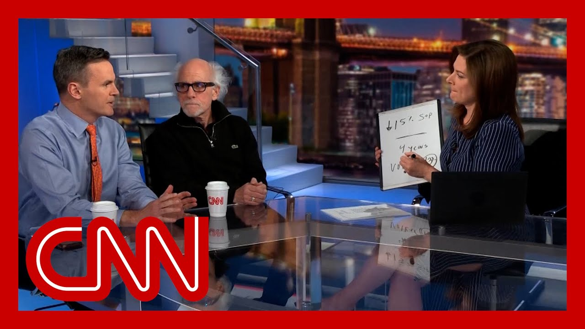

【企业表示在特朗普关税政策下艰难求生】
Summary: Fashion designers face uncertainty due to tariffs, with Lafayette 148 CEO Deirdre Quinn doubting her company's survival despite tariff reductions, while independent jewelry designer Presley Oldham loses revenue as retailers avoid U.S.-based products.
摘要： 时装设计师因关税面临不确定性，Lafayette 148首席执行官Deirdre Quinn尽管关税降低仍对公司生存存疑，而独立珠宝设计师Presley Oldham因零售商回避美国产品而收入受损。

⏱️ Estimated Reading Time: 15 min
Fashion designers are already sh next year's collections.
时装设计师已在筹备明年的系列。
But given the current trade clim this is the first time in 30 years of business.
但考虑到当前的贸易气候，这是30年来的首次。
Deirdre Quinn is seriously doubt if she can keep her company for another year.
Deirdre Quinn严重怀疑她的公司能否再撑一年。
Are you confident you'll be around for 2026? No.
你有信心撑到2026年吗？没有。
Quinn is co-founder and CEO of Lafayette 148, a luxu label that has become a fixture in the fashion industry worn by the likes of Julia Rober Viola Davis, the former speaker of the House and the Fir
Quinn是Lafayette 148的联合创始人兼首席执行官，这个奢侈品牌已成为时尚界的常青树，受到Julia Roberts、Viola Davis、前众议院议长等人的青睐。
It's a brand now struggling despite the rollback on Chinese
尽管对中国关税有所回调，该品牌仍在挣扎。
Lafayette 148 is straining under the tariffs still in place
Lafayette 148在现行关税下举步维艰。
So what do you do.
那你怎么办？
What is your strategy then going
你的策略是什么？
Well at the moment it's to speak
目前就是发声。
So far, Quinn has paid some $2.8 million in tariffs this year, paying 30%, while certainly better than the 145% that was previously in place.
截至目前，Quinn今年已支付约280万美元关税，税率为30%，虽比之前的145%低得多。
Still means she needs to pay an additional $ million over the next 90 days.
但仍意味着她未来90天需再支付数百万美元。
You know, we're in a tough position right
我们目前处境艰难。
Tough, because if she were to pass on the current total tariff cost to her custome a blouse from her collection currently costing about $600, would be more than 700.
艰难在于，若将关税成本转嫁给顾客，一件现价约600美元的衬衫将超700美元。
It's a shift the entire industry is feeling.
整个行业都感受到这一变化。
The U.S. receives 97% of its clothing and shoes from other countries, primarily China and Vietnam.
美国97%的服装和鞋类依赖进口，主要来自中国和越南。
In Quinn's case, 95% of her products are made in
对Quinn而言，95%的产品产自中国。
Right now, she stays afloat by shipping only what has already sold without passing the total cost onto her customers.
目前她仅发货已售商品且不转嫁全部成本以维持运营。
Meanwhile, most of her inventory is still sitting in Ch
同时，她的大部分库存仍滞留中国。
I can't afford to have my entire cash flow go to the tariffs and that's what's happening.
我无法承受现金流全用于支付关税，但现状正是如此。
Independent jewelry designer Presley Oldham is doing what President Trump has been advocating for.
独立珠宝设计师Presley Oldham正践行特朗普总统倡导的做法。
His product is made in the Unite
他的产品产自美国。
They're really beautiful color.
它们颜色非常美丽。
He still needs fresh water pearls, which come primarily from two places in the world Chi or Japan.
他仍需淡水珍珠，主要产自中国或日本。
At a recent show, he says retailers from Canada an who wanted to avoid tariffs refused to buy because he's a U. based designer.
近期展会上，加拿大等国零售商为避关税拒绝采购，因他是美国设计师。
How much revenue do you think you've lost? So far easily upwards of $40,000.
你认为损失了多少收入？迄今至少4万美元。
As an entrepreneur, I'm really searching for this sort o to stand on right now, and I don't know what that looks
作为企业家，我正寻找立足点，但不知其貌。
Repercussions are already being felt on the sales at Lafayette. 148 boutique in Soho.
Soho的Lafayette 148精品店已感受到销售冲击。
Our clients are walking in and a if we're okay.
顾客进店时会问我们是否安好。
What do you tell them?
你怎么回答？
You're looking for a ray of hope that this is all just a bad dream, and it's going to go away.
你寻找一线希望，希望这只是场噩梦终将结束。
The real worry is if the tariff nightmare doesn't go away in short order.
真正令人担忧的是若关税噩梦不尽快消散。
Deirdre Quinn says her life's work and all she has built may soon b
Deirdre Quinn表示她毕生的事业可能即将崩塌。
How long do you think realistica you can keep doing this? No, I won't make it to Labor Day
你认为还能撑多久？撑不到劳动节。
They won't make it to Labor Day.
他们撑不到劳动节。
Thanks so much to Jason Carroll for that report.
非常感谢Jason Carroll的报道。
That, of course, is just a few months away.
当然，那只是几个月后的事。
Paul Hickey and Peter talk are o Paul.
Paul Hickey和Peter在讨论。
Okay. What I find so powerful about that is extremely high end brand, obviously.
这段报道的震撼之处在于这显然是个高端品牌。
So you see something $600 goes t North of 700 with 30% tariff.
一件600美元的商品因30%关税涨至700多美元。
But this is this is after Trump
但这已是特朗普回调关税后。
So it went from 140, 545% to 30%
税率从145%降至30%。
Everyone goes phew. Market goes.
大家都松口气，市场反应积极。
But now the reality of that 30% still devastating.
但现实是30%仍具毁灭性。
It's still very high, especially for smaller businesse where they may not be able to eat some of the costs or some of the impact of the tar
对小企业而言仍过高，它们可能无法消化部分成本或关税影响。
I mean, the tariffs weren't zero before Trump came in, right
特朗普上任前关税也非零。
So it's not quite 0 to 30%, but It is, you know, in the margin the clothing business where margins can be.
虽非从0%到30%，但在利润本就很薄的服装业。
So thin as it is, any, you know, increase is going to be impactfu
任何增长都会造成冲击。
And especially in an economy that's been showing signs of slowdown, it's very dif on the businesses impacted.
在经济放缓的背景下，受影响企业尤为艰难。
There's no denying that. No, I you know, look, I think we we were focusing for the first last couple of day
无可否认。过去几天我们关注的重点是...
We've been talking about GM and Ford and the problems with guidance and about how difficult they're not clear about what they're going to do about t
我们讨论过通用和福特的盈利指引问题及其应对措施的不确定性。
And they said they're going to have to raise prices for cars
他们表示将提高汽车售价。
But you we started this whole th when we came on here the first time a few weeks ago when we talked about, the, the stuffed animals and small business is going to b
但几周前我们首次讨论时，就提到毛绒玩具和小企业将受最大冲击。
the biggest one to suffer here. And that is such a lifeblood of this, of the economy.
它们是经济的命脉。
And to think that, you know, how do what, how do they make their decisions
想想它们如何决策...
Still, there's not a lot of clar about what that number is going and what their costs are going t
成本数字仍不明朗。
And their margins are really sma whether it's even there's some food businesse that are in the small business,
利润微薄，即使是食品类小企业。
And obviously, toys are a big th
玩具行业影响显著。
And, you know, I have a friend who runs a caviar business. I know it's a luxury item, but it's the question that they'
我有个经营鱼子酱生意的朋友，虽是奢侈品，但他们面临的问题是...
forced to make now is how much can they pass on to their customers, you know, or how much do they have to eat?
能在多大程度上转嫁给顾客或自行消化。
You know, at this point, to eat sort of the strange way we use that word. Sorry.
"消化"这个词用得有点怪。
but but, you know, do they stay in busine and ride this out, right?
但他们是否该坚持挺过去？
Because, you know, is it worth is it worth eating the cost to stay in business?
因为值得为生存而承担成本吗？
Because sometimes the margins are just small enough that that's about all.
有时利润薄到仅能如此。
That is a case in point. The Russell 2000 today was the weakest of the ind
Russell 2000指数今日表现最弱就是例证。
Well, the other well the large cap indices were Russell 2000 small caps were wea
大盘股指数表现尚可，但小盘股疲软。
And this is just one area where small businesses have less pricing power.
这正体现小企业议价能力较弱。
And so it's more impactful. Righ
因此冲击更大。
And you can see that and obvious
这显而易见。
but you know it's you looked at this market reacti
但市场反应仿佛...
We're seeing the market reaction if as if none of this ever happe is if we went for 145 back to the way it was before. R
市场反应像是从145%回归原状般乐观。
Which is not the case, but that is what the market reac
事实并非如此，但市场就这么反应。
So, Paul, this is your, your, your whiteboard here tonight.
Paul，这是你今晚的白板分析。
So the S&P coming into, the the decline was 15%. I mean, that was epic.
标普500指数此前跌幅达15%，堪称史诗级。
It was down 15% just down.
暴跌15%。
So now I'm just going to go ahead and p we're back to even.
如今已收复失地。
Right. Is you have a race that there are only here's our next number.
历史上仅有四次...
They're only four years in histo where the market has gone from d to to flat right.
市场从暴跌到回正的年份。
And, and, and one of those years was 1982. Right.
包括1982年。
And I'm just going to put up thi
我列出这些数据...
This will mean something to a lot of people. Yeah.
很多人会明白其意义。
Paul Volcker was the head of the Federal Reserve.
保罗·沃尔克时任美联储主席。
Interest rates at the time were right, 13%.
当时利率高达13%。
Right. Yeah. So I mean, 19 the 1982 period is fascinating to look at because when you look talk about central bankers, Paul Volcker is considered the gold standard.
1982年很有趣，因沃尔克被视为央行行长典范。
When you look back at it, back at the time, he was criticized from all angles for what he was
但当时他饱受各方批评。
Carter, as he was president, called his and he Carter appointed him called as Paul policies ill advi
卡特总统虽任命他却称其政策欠妥。
Ted Kennedy was calling for an end of the autonomy of th
泰德·肯尼迪曾呼吁废除美联储自治权。
And there was even someone arrested at Capitol Hill with a gun because he was trying to take me of the FOMC hostage shoot because rates were so high.
甚至有人持枪闯入国会山企图绑架FOMC成员，因利率过高。
So it was a crazy time. So maybe you're making us feel better about, you know, Tru
那个疯狂年代或许让我们对当前困境稍感宽慰。
But can you imagine if social media was around then how crazy that would have b
若有社交媒体当时会更疯狂。
But getting back to these years. So the year 1982 is one of them.
回到这些年份，1982年是其中之一。
We had 1970, 2009 and 2020 all years where we had some major problems going on in the economy, Covid being 2020.
1970年、2009年和2020年（新冠疫情）都经历重大经济危机。
Exactly. Financial crisis. And then when we came back and then we rally back to even, there were still tons of uncertainty in the markets.
金融危机后市场虽反弹，不确定性仍存。
People were thinking, okay, this could just go south really quickly again.
人们担心形势可能再度急转直下。
Yeah, but in all those four peri the market ended up even after that rebound ended up over the course of the next year, trading higher over the next three, six and 12 months, all of those time
但这四个时期反弹后，市场在接下来3/6/12个月均走高。
So it just goes to show that the when as as people are psychology is to get so invested in the day to day headlines and make rash decisions.
这说明人们易受每日头条影响而草率决策。
But the economy has been through
但经济历经风雨。
And if you think about that, each one of those cases and you, Matt, you explain to me what happened in 82 about what they had to do with interest rates.
Matt，你解释下1982年与利率的关系。
Obviously, with Covid, there was a stimulus package that came in that got us to the where we were right.
新冠疫情时期，刺激计划助我们复苏。
If you think about Covid, right, we came into Covid. They they put $3 trillion into t over, three months.
三个月投入3万亿美元。
And we were back to even by Augu
八月即收复失地。
And so we don't have that happening at this time.
但当前无此刺激。
Now, there's no stimulus in the wings to get us out of this situation.
暂无刺激计划助我们脱困。
Think about that. That was huge.
那笔刺激规模巨大。
If we did not, we had learned from the problem we had in the great financial cr
我们从大衰退中吸取教训。
where we put 800 billion into the market, over eight over 18 months.
当时18个月投入8000亿美元。
It took us six years to get back to even Covid.
花了六年才复苏。
We put $3 trillion into the mark over three months. We were back to even in five mon
这次三个月投入3万亿，五个月即回正。
we don't have a stimulus package looming here to get us out of th
如今却无刺激计划。
So right now we're at the crossr where are we going to go here?
我们正处于十字路口。
Are we going to say markets are on their highs here? They're acting well, but we just started this convers with the reality that things are not perfect yet by any means.
市场表现良好，但现实远非完美。
No, by no means are they perfect
远非完美。
But in June 2020, in May 2008, 2009, people, we weren't sitting here going, oh, there's a stimulus and the market's going to go up from here.
但2020年6月或2009年5月时，人们也不确定刺激措施会推高市场。
There's still uncertainty in the at that time, even after the reb
即便反弹后不确定性仍存。
All right. Thank you both very m
好的，非常感谢二位。